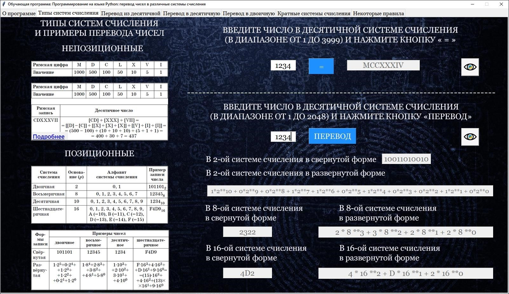
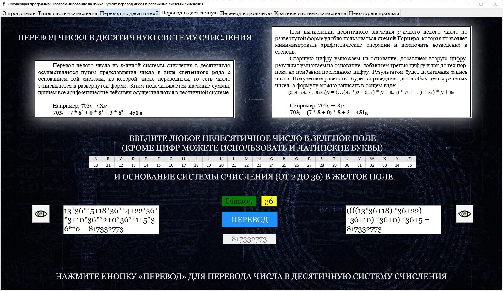

ОПИСАНИЕ РАБОТЫ ПРОГРАММЫ
Обучающая программа содержит следующие разделы:
- Типы систем счисления;
- Перевод из десятичной системы счисления;
- Перевод в десятичную систему счисления;
- Перевод в двоичную систему счисления;
- Кратные основания систем счисления;
- Некоторые правила записи чисел с различными основаниями систем счисления
Для перехода к тому или иному разделу программы необходимо нажимать на ярлыки соответствующих вкладок в верхней части окна программы. На вкладке «Типы системы счисления» представлены возможности языка Python, позволяющие реализовать алгоритм перевод чисел из десятичной системы счисления в непозиционную на примере римской системы счисления, а также перевод из десятичной в двоичную, восьмеричную и шестнадцатеричную системы счисления. Здесь кратко изложена теория с описанием позиционных и непозиционных систем счисления, а также примеры записи чисел. Обучающимся предлагается ввести произвольные десятичные числа в соответствующие поля и посмотреть результат перевода по нажатию кнопок «=» и «Перевод» (рис. 2).
Рис. № 2. Вкладка «Типы системы счисления»
На вкладке есть возможность ознакомиться с кодом и комментариями к нему. В алгоритме перевода в римскую систему счисления представлены возможности использования условного оператора. При работе с позиционными системами счисления пользователь знакомится со специальными встроенными функциями для перевода в двоичную, восьмеричную и шестнадцатеричную системы счисления (рис. 3).
Рис. № 3. Код программы к задачам на вкладке «Типы системы счисления»
На вкладке «Перевод из десятичной» представлена реализация соответствующего алгоритма. На ней кратко изложен математический подход и схема действий для осуществления перевода из десятичной в любую другую позиционную систему счисления. Обучающемуся предложено ввести произвольное десятичное число в зеленое поле и нужное ему основание системы счисления – в желтое. После чего программа автоматически производит перевод и заполняет соответствующие поля для визуализации решения задачи (рис. 4). Пользователю доступен соответствующий код программы и комментарии к нему. В нем представлен модуль генерации случайных данных, а также возможности словаря для подстановки букв латинского алфавита вместо соответствующих цифр в формулы. Сам перевод представлен циклическим алгоритмом, в котором используется целочисленное деление и получение остатков (рис. 5).
Рис. № 4. Вкладка «Перевод из десятичной»
Рис. № 5. Код программы к вкладке «Перевод из десятичной»
На вкладке «Перевод в десятичную» представлены возможности языка Python, позволяющие реализовать алгоритм перевода числа из любой системы счисления в десятичную двумя разными способами. Обучающемуся предлагается ввести в зеленое поле число в любой системе счисления, которое может содержать в себе в том числе и буквы латинского алфавита. В желтое поле нужно ввести основание системы счисления. По нажатию кнопки «Перевод» программа переводит заданное число в десятичную систему счисления. Слева будет представлен ответ, полученный с помощью алгоритма перевода путем представления числа в виде степенного ряда. Справа же представлен алгоритм перевода с помощью схемы Горнера (рис. 6). Нажав на иконку глаза, вы можете увидеть код на языке Python и комментарии к нему. Обучающийся может ознакомиться с циклическими структурами для сбора строки, представляющей тот или иной метод в развернутой форме, а также использование словаря для подстановки цифр в формулы вместо соответствующих букв латинского алфавита (рис. 7).
Рис. № 6. Вкладка «Перевод в десятичную»

Рис. № 7. Код программы к вкладке «Перевод в десятичную»
На вкладке «Перевод в двоичную» представлена реализация алгоритма перевода чисел из десятичной системы счисления в двоичную с использованием комбинаторики. Здесь изложена теория, связанная с решением «задачи о рюкзаке», и показано как десятичное число собирается из степеней двоек. Обучающимся предоставлена возможность потренироваться на интерактивном тренажере в решении данной задачи, подсчете в уме степеней двоек и оперативно проверить свое решение (рис. 8). Пользователю доступен соответствующий код программы и комментарии к нему. В нем представлены циклические структуры для сбора строки двоичного представления числа в развернутой форме (рис. 9).
Рис. № 8. Вкладка «Перевод в двоичную»
Рис. № 9. Код программы к вкладке «Перевод в двоичную»
На следующей вкладке размещен тренажер по решению типовой задачи в курсе информатики – переводу чисел с кратными основаниями систем счисления. В частности, здесь представлен пример перевода двоичного числа в восьмеричную и шестнадцатеричную системы счисления. На вкладке кратко изложена математическая основа этого перевода и представлена схема разложения двоичного числа на триады и тетрады цифр. Обучающемуся предлагается задание, сгенерированное случайным образом. Ему необходимо правильно представить двоичное число в восьмеричной и шестнадцатеричной системе счисления. Для проверки ответа нужно нажать на кнопку «Проверить». В соответствующих полях формы будут представлены результаты (рис. 10).
Рис. № 10. Вкладка «Кратные системы счисления»
На вкладке есть возможность ознакомиться с кодом программы, содержащий модуль генерации случайных данных, а также специальные встроенные функции для перевода в двоичную, восьмеричную и шестнадцатеричную системы счисления (рис. 11).
Рис. № 11. Код программы к вкладке «Кратные системы счисления»
На вкладке «Некоторые правила» обучающемуся предлагается тренажер для отработки решения типовой задачи ЕГЭ, и представлены возможности языка Python, позволяющие реализовать данный алгоритм. Перед решением задачи у пользователя есть возможность ознакомиться с основными теоретическими выкладками, описывающими общие правила записи значений выражения в различных системах счисления. Обучающийся получает случайно сгенерированное задание и может быстро проверить правильность своего ответа (рис. 12). Также у него есть возможность ознакомиться с кодом на языке Python и комментариями к нему. В программе показана необходимость использования словаря для подстановки букв латинского алфавита вместо соответствующих цифр в формуле, а также представлен циклический алгоритм для получения записи в различных системах счисления, в котором используется целочисленное деление и получение остатков (рис. 13).
Рис. № 12. Вкладка «Некоторые правила»
Рис. № 13. Код программы к вкладке «Некоторые правила»
Для выхода из программы необходимо нажать на крестик в правом верхнем углу окна обучающей программы.